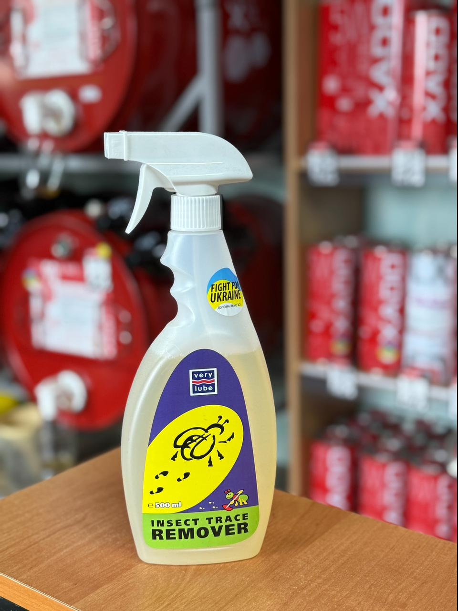

Очисник слідів комах VERYLUBE 500 мл
Ціна: 150 грн
Об’єм: 500 мл
Високоефективний концентрований засіб VERYLUBE для швидкого та безпечного видалення складних органічних забруднень з поверхні автомобіля. Формула спеціально розроблена для активного розщеплення хітину, з якого складаються панцири комах. Засіб абсолютно безпечний для автомобільного скла, лакофарбового покриття, пластикових, хромованих та нікельованих елементів екстер'єру.
- Ефективно та безслідно розчиняє залишки комах на кузові, решітці радіатора та лобовому склі.
- Впорається як зі свіжими, так і з засохлими плямами від деревної смоли чи бітуму.
- Швидко змиває липкі сліди від тополиних бруньок та рослинного соку.
- Допомагає позбутися від вапняного нальоту (плям від жорсткої води після мийки).
- Завдяки потужним мийним компонентам відмінно відмиває скло від звичайного дорожнього бруду та масляної плівки, забезпечуючи ідеальну видимість.
Інструкція із застосування
- Перед використанням добре збовтайте ємність із засобом.
- Рясно розпиліть спрей безпосередньо на забруднену ділянку.
- Зачекайте 5–10 секунд, щоб активні речовини встигли розчинити бруд.
- Обережно протріть оброблене місце чистою м'якою серветкою або автомобільною губкою.
Корисні поради
- У разі надто стійких, запечених на сонці або застарілих плям рекомендується нанести засіб повторно або одразу збільшити його кількість вдвічі.
← Назад до каталогу